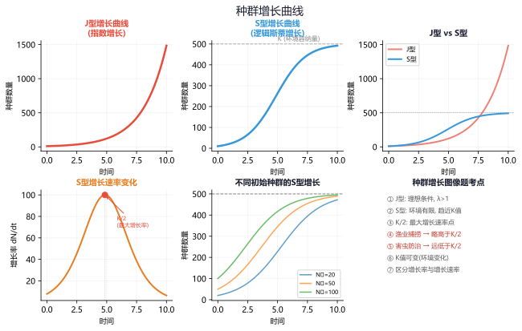

专题一：细胞分裂图像识别
有丝分裂与减数分裂细胞分裂图像的判断策略：细胞分裂图像题是高考生物的常考题型，解题关键在于掌握"三步判断法"。
第一步：看有无同源染色体
有同源染色体 → 有丝分裂 或 减Ⅰ分裂
无同源染色体 → 减Ⅱ分裂
第二步：看同源染色体的行为
联会/四分体（减Ⅰ前期）| 同源染色体排列在赤道板两侧（减Ⅰ中期）| 同源染色体分离（减Ⅰ后期）
同源染色体无特殊行为，着丝粒排列在赤道板上（有丝分裂中期）| 着丝粒分裂姐妹染色单体分开（有丝分裂后期）
第三步：看细胞质分裂方式
均等分裂 → 精细胞形成 或 极体 | 不均等分裂 → 卵细胞形成

各时期识别要点速记：
有丝分裂前期：核膜消失，出现染色体，散乱排列
有丝分裂中期：染色体排列在赤道板上（数目最清晰，观察最佳时期）
有丝分裂后期：着丝粒分裂，姐妹染色单体分开，染色体数目加倍
有丝分裂末期：核膜重新形成，细胞板（植物）或缢裂（动物）
减Ⅰ前期：联会形成四分体，交叉互换（重要识别标志）
减Ⅰ后期：同源染色体分离（与有丝分裂后最关键的区分点——减Ⅰ后期有同源染色体分离行为）
减Ⅱ后期：无同源染色体，着丝粒分裂

图像①：染色体排列在赤道板上，有同源染色体4对
图像②：无同源染色体，着丝粒分裂，染色体移向两极
图像③：有四分体形成，共4个四分体
图像①：有同源染色体且排列在赤道板上 → 有丝分裂中期或减Ⅰ中期。因为中期有丝分裂和减Ⅰ中期都有同源染色体在赤道板上，区别在于减Ⅰ中期是同源染色体成对排列在赤道板两侧，而有丝分裂中期是着丝粒排列在赤道板上。若题干图片显示同源染色体成对在赤道板两侧 → 减Ⅰ中期。
图像②：无同源染色体，着丝粒分裂 → 减Ⅱ后期（注意着丝粒分裂在减Ⅱ后和有丝后都发生，但减Ⅱ后无同源染色体，有丝后有同源染色体）。
图像③：有四分体 → 减Ⅰ前期，四分体数=同源染色体对数=n=4。
解题关键：
1. 若图中出现了"染色体数从2n→n的骤降" → 减Ⅰ完成（同源染色体分离）
2. 若图中出现了"染色体数从n→2n的短暂加倍" → 减Ⅱ后期或M后期（着丝粒分裂）
3. 染色体:染色单体:DNA的比例：
• 复制前 1:0:1 | 复制后 1:2:2（有染色单体时期）
• 着丝粒分裂后 1:0:1（无染色单体）
4. 有丝分裂全程DNA变化：2→4→4→4→2（C值）
5. 减数分裂DNA变化：2→4→4→2→2→1（C值）
专题二：代谢过程图像分析
光合作用与细胞呼吸光合作用过程图像分析：光合作用分为光反应和暗反应两个阶段。
光反应（类囊体膜）：需要光、水、酶；产物为氧气、ATP、NADPH（[H]）
暗反应（叶绿体基质）：不需要光（但需要光反应提供的ATP和NADPH），CO₂固定→C₃还原→C₅再生
卡尔文循环：CO₂ + C₅ → 2C₃（CO₂固定）→ C₃被NADPH还原 → 葡萄糖 + C₅再生

光合作用图像常见题型：
① 光照强度曲线：光补偿点（光合=呼吸）、光饱和点（继续增强光照光合不再增加）
② CO₂浓度曲线：CO₂补偿点、CO₂饱和点
③ 温度曲线：有最适温度（过高时酶活性下降，呼吸速率上升加速有机物的消耗）
④ 多因子综合曲线：各因素相互制约，限制因素分析
细胞呼吸过程图像：
有氧呼吸：C₆H₁₂O₆ + 6O₂ → 6CO₂ + 6H₂O + 大量ATP
三个阶段：①细胞质基质（糖酵解）②线粒体基质（柠檬酸循环）③线粒体内膜（电子传递链/氧化磷酸化）
无氧呼吸：C₆H₁₂O₆ → 2C₃H₆O₃（乳酸发酵）或 2C₂H₅OH + 2CO₂（酒精发酵）+ 少量ATP
呼吸作用图像注意点：
① O₂浓度对呼吸的影响：低氧时无氧呼吸受促进，高氧时无氧呼吸被抑制
② 温度对呼吸的影响：适当降低温度可减少有机物消耗（蔬菜水果保鲜）
③ 种子萌发时呼吸强度变化：先急剧上升后稳定在较高水平
（1）一天中CO₂浓度最低点和最高点分别出现在什么时刻？
（2）这些点代表什么生理意义？
（1）CO₂浓度最高点一般在日出前（约4-6时），最低点在日落前（约16-18时）。
（2）分析：
• 夜间只进行呼吸作用 → CO₂浓度持续上升 → 日出前达最高
• 日出后光合作用开始吸收CO₂ → CO₂浓度开始下降
• CO₂浓度下降=光合速率>呼吸速率；CO₂浓度上升=呼吸速率>光合速率
• CO₂浓度曲线的拐点（由升转降或由降转升）→ 光合速率 = 呼吸速率（光补偿点）
关键：一天中CO₂浓度最高点为呼吸作用的累积最大值，最低点为净光合积累的最大值。
A．A点表示呼吸速率
B．B点表示光补偿点，此时光合=呼吸
C．C点以后限制因素为CO₂浓度和温度
D．D点光合速率达到最大值
光照强度为0时，植物只进行呼吸作用 → A点为呼吸速率（CO₂释放量或O₂吸收量）。
B点：净光合=0，即光合=呼吸 → 光补偿点。
过C点后光照强度继续增加但光合速率不再上升 → 可能是CO₂浓度、温度或水分限制了光合作用的进行。
D点：光饱和点，光合速率最大。
四个选项均正确。
答案：无错误选项（本题考查各项概念的理解，注意曲线各关键点的含义）。
专题三：遗传类图像分析
系谱图 · 遗传图解 · 电泳图系谱图分析技巧：系谱图是一种典型的遗传图像题，分析步骤：
① 判断显隐性：双亲正常→子代患病=隐性（无中生有）；双亲患病→子代正常=显性（有中生无）
② 判断致病基因位置（常染色体/伴X/伴Y）：结合性别分布特征和特殊条件（如"某个体不携带致病基因"）
③ 推断个体基因型：对不能完全确定的个体标注"__"或"A_"
④ 计算概率：条件概率、患男/男患区别
群体遗传数据图像：
• 直方图/柱状图：展示不同基因型/表型的频数分布
• 饼图：展示基因型频率或表型比例
• 散点图/折线图：展示基因频率变化趋势（如人工选择下等位基因频率的变化）
DNA指纹图谱与电泳图：
• 电泳分离DNA片段 → 不同个体DNA片段长度不同 → 形成不同条带
• 亲子鉴定：子代条带一半来自父方、一半来自母方
• 遗传病诊断：通过特定基因片段的有无判断是否携带致病基因
第一代：Ⅰ-1(男)正常 × Ⅰ-2(女)正常
第二代：Ⅱ-1(女)正常, Ⅱ-2(男)色盲
问：（1）Ⅰ-2的基因型是什么？（2）Ⅱ-1与正常男性结婚，生出色盲儿子的概率？
（1）Ⅰ-1正常(X^B Y) × Ⅰ-2正常 → Ⅱ-2色盲(X^b Y)。Ⅱ-2的X^b来自母亲Ⅰ-2 → Ⅰ-2为携带者X^B X^b。
（2）Ⅱ-1表型正常，其母亲为X^B X^b、父亲为X^B Y → Ⅱ-1为X^B X^B(1/2)或X^B X^b(1/2)。
若Ⅱ-1为X^B X^b(概率1/2) → 生色盲儿子概率=1/4（X^b Y）
Ⅱ-1与正常男性(X^B Y)结婚，生色盲儿子概率=1/2 × 1/4 = 1/8。
注意：这里"生出色盲儿子" = 同时考虑性别和患病，需要 × 1/2 吗？不需要再额外乘，因为在1/4中已经包含了性别：X^b Y就是男性色盲，概率已在配子推算中包含了。
从电泳结果看：
父亲有两条带 → 杂合子
母亲有一条带 → 纯合子
患病孩子与父亲共享一条带 → 携带父源致病基因
正常孩子与母亲共享一条带 → 携带母源正常基因
若该病为常染色体显性，则患病的父亲为Aa，正常的母亲为aa → 子代Aa:aa=1:1 → 符合上述电泳结果。
若为伴X显性，则父病(X^A Y)×母正常(X^a X^a)→子代女儿全部患病(X^A X^a)、儿子全部正常(X^a Y)，不符合电泳结果。
结论：该病最可能为常染色体显性遗传。
专题四：调节类图像分析
神经 · 体液 · 免疫神经调节图像分析：
动作电位图像：横轴为时间(ms)，纵轴为膜电位(mV)。静息电位约-70mV（K⁺外流），去极化至+35mV（Na⁺内流），复极化（K⁺外流），超极化（约-80mV后恢复）。
关键点判断：去极化速率反映Na⁺通道开放速度；动作电位幅度与细胞外Na⁺浓度正相关。
突触传递图像：突触前膜→突触间隙→突触后膜；神经递质释放（Ca²⁺内流触发）→受体结合→离子通道变化→产生兴奋或抑制。

体液调节图像：
• 激素分泌的反馈调节：下丘脑→垂体→靶腺体（甲状腺/性腺/肾上腺）→激素→反馈抑制
• 血糖调节：胰岛素（降血糖）vs 胰高血糖素（升血糖），两者相互拮抗
• 体温调节：冷→战栗产热、血管收缩；热→出汗、血管舒张
免疫调节图像：
初次免疫与二次免疫曲线：初次免疫有潜伏期（约3-7天），抗体浓度较低；二次免疫反应更快更强（记忆细胞快速增殖分化），抗体浓度更高、持续时间更长。
疫苗原理：利用二次免疫的特点，注射抗原（灭活/减毒病原体）使机体产生记忆细胞。
体液免疫vs细胞免疫：体液免疫针对细胞外病原体（B细胞→浆细胞→抗体）；细胞免疫针对胞内病原体/癌细胞（T细胞→效应T细胞→裂解靶细胞）。

（1）静息电位时，神经纤维膜两侧的电位如何分布？
（2）兴奋在突触处传递的特点及原因？
（3）如果细胞内Na⁺浓度升高，动作电位的峰值会如何变化？
（1）静息电位：膜内负电位、膜外正电位（外正内负），约为-70mV。主要由K⁺顺浓度梯度外流形成（K⁺通道开放）。
（2）突触传递特点：单向传递（突触前膜→突触后膜），有突触延搁（递质释放、扩散、结合需要时间）。原因：神经递质只能从突触前膜释放作用于突触后膜。
（3）动作电位的峰值与细胞内外Na⁺浓度梯度有关。细胞内Na⁺浓度升高→膜内外Na⁺浓度差减小→Na⁺内流减少→动作电位峰值降低。
拓展：河豚毒素（TTX）阻断Na⁺通道→不能产生动作电位；箭毒阻断乙酰胆碱受体→兴奋不能传递到突触后膜。
（1）初次注射疫苗后，抗体浓度变化的特点？
（2）半年后注射加强针，抗体变化有何特点？
（1）初次注射疫苗：约3-7天潜伏期（B细胞活化、增殖、分化为浆细胞的过程需要时间），抗体浓度缓慢上升，达到峰值后逐渐下降（记忆B细胞同时产生）。
（2）加强针注射：记忆B细胞快速识别抗原→迅速增殖分化为浆细胞→抗体浓度短期内急剧上升（更快、更高、更持久），峰值远高于初次应答。
关键点：二次免疫反应更迅速、更有效的免疫学基础是记忆细胞的存在。这也就是疫苗需要接种加强针的原理。
专题五：生态类图像分析
种群 · 群落 · 生态系统种群增长曲线：J型曲线（资源无限条件）N_t = N₀λᵗ，指数增长；S型曲线（资源有限条件）N_t = K/(1+(K/N₀-1)e^(-rt))，逼近K值。
• K/2处增长率最大——渔业捕捞量需维持在此水平附近实现可持续开发
• K值环境容纳量——不是固定的，随环境条件变化而变化

生态系统的能量流动图像：
• 能量金字塔：生产者为底层，每个营养级逐级递减（传递效率约10-20%）
• 流向：同化量 = 摄入量 - 粪便量；同化量 = 呼吸消耗 + 生长繁殖（净生产量）
• 各营养级能量的去向：呼吸散失、流向下一营养级、流向分解者、未被利用

生态图像常见考查方式：
① 种群数量变化曲线 → 识别J/S型，计算增长率，分析K值变化原因
② 种间关系曲线（捕食、竞争、寄生、互利共生）→ 根据曲线同步变化特征判断
③ 生态金字塔 → 数量金字塔/生物量金字塔/能量金字塔的异同
④ 物质循环图 → 碳循环/氮循环中各成分的判定（生产者、消费者、分解者、无机环境）
（1）该生态系统中能量从生产者到初级消费者的传递效率是多少？
（2）初级消费者同化量中的能量去向有哪些？
（1）传递效率 = 下一营养级同化量 ÷ 上一营养级同化量 × 100%
生产者同化量 = 固定太阳能总量 = 100%
初级消费者同化量 = 12%
传递效率 = 12% / 100% = 12%
（2）初级消费者同化能量(12%)的去向：
① 呼吸消耗(7%) → 以热能形式散失
② 用于生长繁殖(5%) → 其中一部分流向次级消费者(2%)，其余(3%)流向分解者（或未被利用）
关键：摄入量 ≠ 同化量（粪便不算同化量）；"同化量=呼吸+净生产量（生长繁殖）"是最核心的能量关系。
（1）该曲线反映的是哪种增长模型？
（2）若要获得最大持续捕捞量，应在哪个点之后捕捞？
（3）D点以后种群数量相对稳定的原因是什么？
（1）S型增长曲线（逻辑斯蒂增长），受环境阻力限制。
（2）B点(K/2)处增长率最大 → 应在略高于B点处开始捕捞，使捕捞后种群数量维持在K/2附近 → 此时种群增长速率最快，能迅速恢复 → 获得最大持续捕捞量。
（3）D点达到环境容纳量K值。当种群数量达到K值时，食物、空间、天敌等环境阻力最大，出生率≈死亡率，种群数量在K值附近波动。
应用：有害生物防治应在K/2之前采取控制措施（使其难以达到高增长阶段）；而濒危物种保护应提高K值（增加栖息地面积、减少人为干扰）。
专题六：实验设计与数据分析图像
实验 · 图表 · 数据生物学实验数据的图像表示：
① 柱状图：展示不同实验组间的数据差异——比高度、看趋势、识差异
② 折线图：展示变量间的依赖关系——看走势、找拐点、分析变化规律
③ 表格数据：找出自变量和因变量，注意对照组的设置
④ XY散点图：相关性分析、拟合曲线
实验设计的基本原则：
① 对照原则：空白对照、条件对照、自身对照、相互对照
② 单一变量原则：实验中只有一个自变量被改变
③ 平行重复原则：每组实验要有足够多的重复（消除偶然误差）
④ 随机性原则：样本分配要随机（排除主观因素的影响）
实验图像题的解题步骤：
① 识图：看清横纵坐标的含义和单位
② 析图：找出变量关系、变化趋势和关键点（最高值/最低值/转折点）
③ 联知识：将图像信息与教材知识对应
④ 作答：用规范的生物学语言回答
温度(℃): 10, 15, 20, 25, 30, 35
光照下CO₂吸收量: 0.5, 1.5, 3.0, 4.0, 4.5, 3.5
黑暗中CO₂释放量: 0.3, 0.5, 0.8, 1.2, 1.8, 2.5
请回答：（1）该植物光合作用的最适温度是多少？呼吸作用的最适温度？
（2）在25℃下，实际光合作用消耗CO₂的量是多少？
（1）光照下CO₂吸收量代表净光合速率。从数据看，30℃时净光合速率最大(4.5mg/h)→净光合最适温度约30℃。但实际光合 = 净光合 + 呼吸，需要综合考量。
实际光合作用（总光合）速率：
10℃: 0.5+0.3=0.8 | 15℃: 1.5+0.5=2.0 | 20℃: 3.0+0.8=3.8 25℃: 4.0+1.2=5.2 | 30℃: 4.5+1.8=6.3 | 35℃: 3.5+2.5=6.0 → 总光合最适温度约30℃。
呼吸作用最适温度：从数据看，温度升高呼吸速率持续上升（35℃时最高2.5mg/h），但实际呼吸作用也有最适温度，超过一定温度酶活性下降。
（2）25℃时实际光合 = 净光合 + 呼吸 = 4.0 + 1.2 = 5.2 mg/h
注意：光合作用中测定的CO₂吸收量 = 净光合速率，实际光合要加上呼吸消耗。
pH 2.0: 0.1 | pH 4.0: 0.5 | pH 6.0: 2.0 | pH 7.0: 2.5 | pH 8.0: 1.5 | pH 10.0: 0.3
（1）该实验的自变量和因变量分别是什么？
（2）该酶的最适pH大约是多少？
（1）自变量：不同pH梯度（2.0~10.0）；因变量：酶促反应速率（产物生成速率mL/min）。
（2）从数据看出pH=7.0时反应速率最快(2.5mL/min)，pH6.0时也较高(2.0mL/min)，pH8.0时下降至1.5mL/min。该酶最适pH约为6.5-7.5。
实验设计注意：
• pH梯度设置要合理，在预期最适pH附近加密梯度
• 需要设置多个重复组取平均值
• 各组的温度、底物浓度、酶量等无关变量应保持一致
专题七：综合图像辨析与应试技巧
综合运用图像题"三步分析法"：
① 看坐标：横轴（自变量）、纵轴（因变量）、单位、刻度——明确考察的是何种生理过程
② 看曲线：起点、终点、拐点（转折点）、交点、趋势（上升/下降/波动/平台）
③ 看特殊点：与横纵轴的交点、极值点、补偿点、饱和点——结合生物学含义作答
常见曲线类型速辨：
光合作用相关：光照强度-光合速率（S型右端饱和）、CO₂浓度-光合速率（有饱和效应）、温度-光合（钟形曲线）
呼吸作用相关：O₂浓度-呼吸速率（低氧时↑、高氧时无氧呼吸↓）、温度-呼吸（指数上升→下降）
酶活性：pH-酶活性（钟形）、温度-酶活性（钟形，有最适温度，高温变性不可逆）
物质运输：浓度差-扩散速率（线性）、浓度差-协助扩散（线性+饱和）、能量-主动运输（有饱和效应）
种群增长：J型（指数上升）、S型（有K值）、增长率（J型递增、S型先增后减至0）
免疫应答：初次免疫（慢、低、短）、二次免疫（快、高、长）
图像题的常见"陷阱"：
① 混淆净光合和总光合（注意题干问的是"吸收量"还是"固定量"）
② 混淆"增长率"和"增长速率"（纵坐标含义要看清）
③ 忽视多因子协同作用（CO₂浓度和光照对光合的综合影响）
④ 误将"相对值"当作"绝对值"
⑤ 条件概率的"男孩患病"与"患病男孩"混淆
⑥ 生态金字塔中"数量金字塔"可能倒置（如树→虫→鸟）
（1）曲线下降的原因是什么？
（2）后期曲线趋于稳定的原因是什么？
（1）曲线下降：光照下植物进行光合作用→不断吸收CO₂→容器内CO₂浓度持续降低。
（2）后期趋于稳定：当CO₂浓度降低到一定水平时，CO₂成为光合作用的限制因素→光合速率逐渐降低。当光合速率=呼吸速率时→净光合为0→CO₂浓度不再变化→达到动态平衡。
拓展：若此时突然增强光照→光反应增强→短期内C₃还原加速→C₃减少、C₅增加→净光合速率暂时上升→CO₂浓度继续下降直至新的平衡点。
（1）从A到B曲线上升的原因？
（2）从B到C曲线下降的原因？
（3）将C点温度下的酶转移到最适温度，酶的活性能否恢复？
（1）A→B（低温→最适温度）：温度升高→酶分子运动加快→酶与底物碰撞概率增加→酶促反应速率上升。
（2）B→C（最适温度→高温）：温度过高→酶的空间结构被破坏（蛋白质变性）→活性中心改变→酶活性下降直至失活。
（3）不能恢复。高温导致酶蛋白变性不可逆（破坏氢键、二硫键等维持空间结构的作用力），即使温度降低到最适温度，活性也无法恢复。
对比：低温（A点）时酶活性低但空间结构不变→温度回升后活性可恢复。保存酶制剂应选择低温条件。